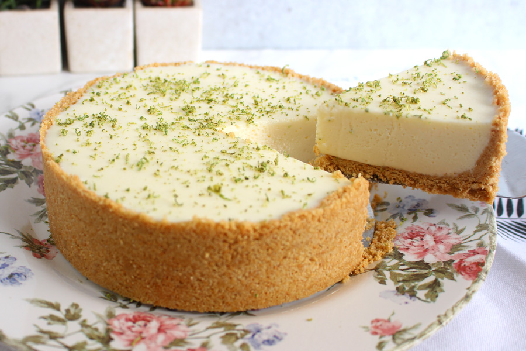
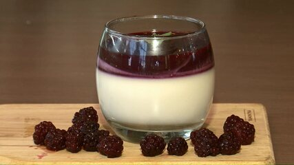
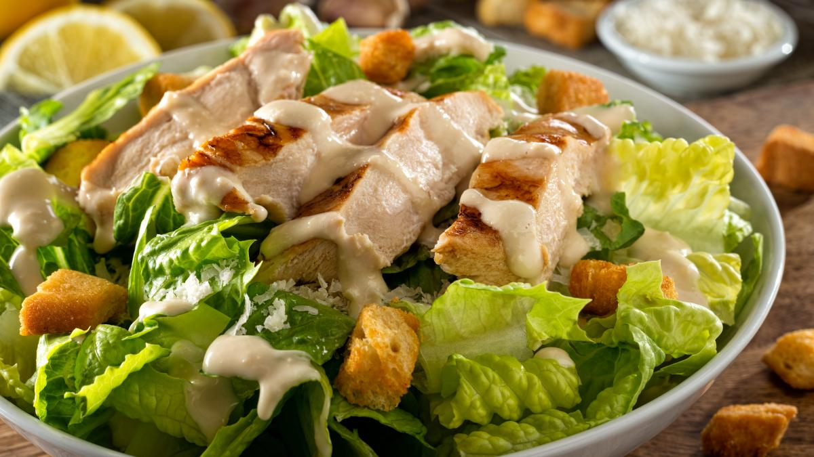

Sabores e Praticidade na Cozinha–Explorando Receitas Deliciosas.
Aqui você encontrará uma variedade de receitas, cuidadosamente selecionadas para trazer sabor e praticidade ao seu dia a dia. Desde pratos clássicos a criações modernas, cada receita é apresentada de forma simples, com instruções claras e ingredientes acessíveis. Seja para um jantar especial ou para refeições rápidas, este espaço é o lugar ideal para descobrir novos sabores e aperfeiçoar suas habilidades culinárias.

Bolo de Cenoura
Um bolo fofinho e delicioso, perfeito para o lanche da tarde.
Ingredientes
- 3 cenouras médias
- 4 ovos
- 1 xícara de óleo
- 2 xícaras de açúcar
- 2 xícaras de farinha de trigo
- 1 colher de sopa de fermento em pó

Macarrão à Carbonara
Um prato clássico italiano, cremoso e muito saboroso.
Ingredientes
- 400g de macarrão (espaguete ou fettuccine)
- 150g de bacon
- 2 ovos
- 100g de queijo parmesão ralado
- Pimenta-do-reino, a gosto
- Sal, a gosto
Brigadeiro
Um doce brasileiro muito amado, ideal para festas.
Ingredientes
- 1 lata de leite condensado
- 2 colheres de sopa de chocolate em pó
- 1 colher de sopa de manteiga
- Chocolate granulado para enrolar
Pão de Queijo
Um petisco brasileiro crocante por fora e macio por dentro.
Ingredientes
- 500g de polvilho doce
- 250ml de leite
- 100ml de óleo
- 2 ovos
- 200g de queijo minas ralado
- Sal, a gosto

Torta de Limão
Uma torta refrescante e deliciosa, perfeita para o verão.
Ingredientes
- 1 pacote de biscoito de maisena
- 100g de manteiga
- 1 lata de leite condensado
- 1/2 xícara de suco de limão
- 3 claras
- 1/2 xícara de açúcar

Feijoada
Um prato tradicional brasileiro, ideal para reunir a família.
Ingredientes
- 500g de feijão preto
- 200g de carne seca
- 150g de linguiça calabresa
- 100g de bacon
- 1 cebola
- 4 dentes de alho
- Folhas de louro, a gosto
- Sal e pimenta-do-reino, a gosto
Quiche de Alho-Poró
Uma quiche deliciosa e saudável, ótima para um brunch.
Ingredientes
- 1 massa de torta
- 2 talos de alho-poró
- 3 ovos
- 200ml de creme de leite
- 100g de queijo ralado
- Sal e pimenta-do-reino, a gosto

Panna Cotta Amora
Uma sobremesa italiana leve e cremosa, ideal para qualquer ocasião.
Ingredientes
- 3 folhas de gelatina
- 200 g de creme de leite fresco
- 50 g de açúcar
- 100 g de purê coado de amoras
Ingredientes da calda
- 100 g de purê de amoras
- 20 g de água
- 100 g de açúcar
Panquecas Americanas
Deliciosas panquecas fofinhas, ótimas para o café da manhã.
Ingredientes
- 1 xícara de farinha de trigo
- 1 colher de sopa de açúcar
- 1 colher de chá de fermento em pó
- 1/2 colher de chá de bicarbonato de sódio
- 1/2 colher de chá de sal
- 1 xícara de leite
- 1 ovo
- 2 colheres de sopa de manteiga derretida
Risoto de Funghi
Um risoto cremoso e saboroso, perfeito para um jantar especial.
Ingredientes
- 1 xícara de arroz arbóreo
- 500ml de caldo de legumes
- 200g de cogumelos secos
- 1 cebola picada
- 2 colheres de sopa de manteiga
- 100g de queijo parmesão ralado
- Sal e pimenta-do-reino, a gosto

Salada Caesar
Uma salada clássica com alface, croutons e molho cremoso.
Ingredientes
- 1 cabeça de alface romana
- 1/2 xícara de croutons
- 1/4 de xícara de queijo parmesão ralado
- 1/4 de xícara de maionese
- 1 colher de sopa de suco de limão
- 1 colher de chá de mostarda
- Sal e pimenta-do-reino, a gosto
Torta de Frutas
Uma torta deliciosa e colorida, perfeita para sobremesa.
Ingredientes
- 200g de Farinha Molino Rosso
- 100g de Açúcar
- 100g de Manteiga Sem Sal
- 1 Clara de Ovo

Pudim de Leite
Uma sobremesa clássica, cremosa e irresistível.
Ingredientes
- 1 lata de leite condensado
- 2 medidas da lata de leite
- 3 ovos
- 1 xícara de açúcar (para a calda)
Croissant
Um pão folhado francês, perfeito para o café da manhã.
Ingredientes
- 500g de farinha de trigo
- 300g de manteiga
- 10g de sal
- 60g de açúcar
- 10g de fermento biológico
- 250ml de água fria
Risoto de Camarão
Risoto de camarão: uma explosão de sabores do mar em cada garfada.
Ingredientes
- 500 g de camarão
- ½ cebola
- 1 cenoura
- 2 dentes de alho
- 3 ramos de tomilho
- 2 litros de água
- 3 colheres (sopa) de vinho branco
- folhas de 1 alho-poró
- Sal

Churrasco
Um clássico da culinária brasileira, ideal para reunir amigos.
Ingredientes
- 1 kg de carne (picanha, alcatra, ou frango)
- Sal grosso, a gosto
- Tempero a gosto (alho, cebola, ervas)
Panetone
Um pão doce tradicional, perfeito para as festas de fim de ano.
Ingredientes
- 500g de farinha de trigo
- 200g de açúcar
- 100g de manteiga
- 4 ovos
- 200ml de leite morno
- 15g de fermento biológico
- 200g de frutas cristalizadas
- Essência de panetone, a gosto